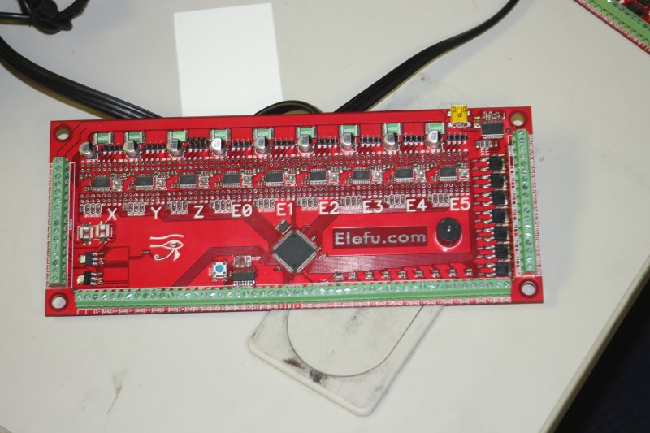
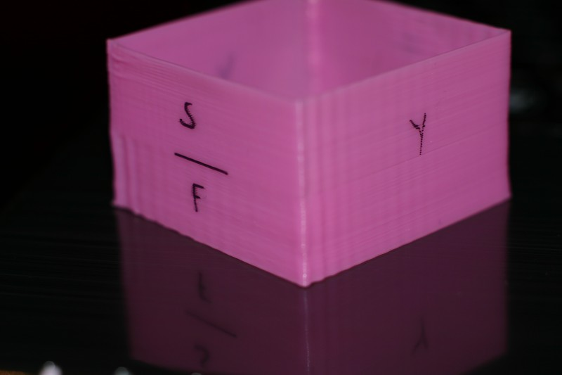
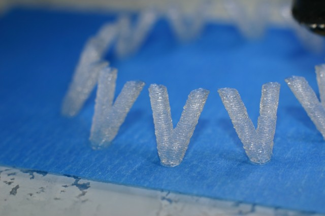
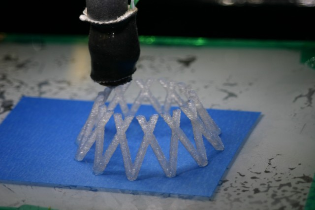
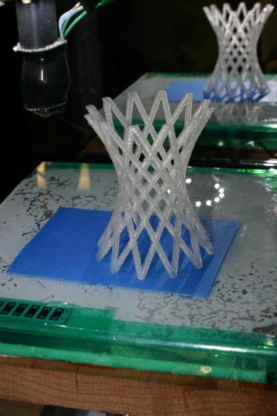
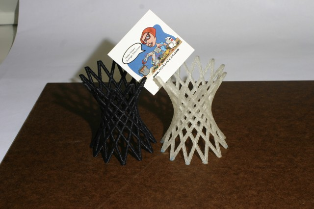
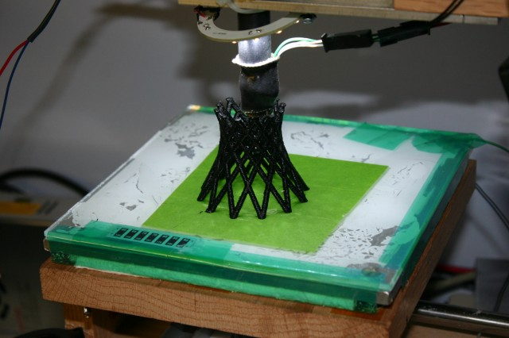

Just the thing for your next 6-color printer build. 

I keep shattering glass printbed surfaces on my MendelMax printer.
I suspect that it’s caused by the combination of using plain glass from old flatbed scanners, and that the glass is 1-inch bigger than the heater on all 4 sides.
I made this custom sized heater by taping down nichrome wire, to the back of a piece of aluminum.
I used a little spreadsheet to figure out the lengths and how many paths in parallel, and the end result came out to within about 0.5 Ohm of my calculation. Not perfect, but close enough that it’ll work fine.
One thing I did notice is that it heats much sooner on the side where the power is connected. I’ll probably wire it so the power connections are at opposite corners.
You can’t solder to nichrome, so I did my best to mechanically trap the nichrome under a little fold of the brass, time will tell if this is reliable.
Here are a few blurry phone-camera pictures.


I spent some time printing several test parts, trying to determine the source of some of the ripples that may appear after a sharp corner in a print. Firmware settings were tweaked to aggravate the problem, raising the “jerk” value high enough to disable acceleration.
This print was done from manually generated gcode. The part labeled “f” was printed faster than the other sides, and the part labeled “s” was printed at a slower speed.
Until now I’d always thought that corner ripples were caused by the axis which just stopped moving taking a moment to quit vibrating, If that was the case I would expect the patterns on the side labeled “y” to vary with the speed of the previous move.
It appears that the waves are actually caused by movement in the axis that’s just starting to move.
I repeated this test on the other axis, and the results were similar.
If anyone has ideas on this, please let me know.


Corner ripples
Single walled print at 0.17mm layers, with a 0.25mm nozzle on a MakerGear hotend.
Slic3r gcode parameters are after the pictures.


; generated by Slic3r 0.7.2b on 2012-05-06 at 01:09:14
; layer_height = 0.18
; perimeters = 1
; solid_layers = 4
; fill_density = 0
; nozzle_diameter = 0.25
; filament_diameter = 1.73
; extrusion_multiplier = 1
; perimeter_speed = 45
; infill_speed = 80
; travel_speed = 100
; extrusion_width_ratio = 0
; scale = 1
; single wall width = 0.28mm
I’ve finished building a MendelMax 3D printer. The controller is a RAMPS 1.4 from Ultimachine, and the hot-end is a MakerGear plastruder, with a 0.25mm nozzle, pushing 1.7mm filament. I used the MendelMax “1.0″ parts, as the “1.5″ hadn’t been released when I started printing.

MendelMax
Read the rest of this entry »
I milled a PCB heater for a Reprap, using a 10degree PCB milling bit. It works well, but draws a lot of power, 130+ watts.

PCB Heater, still cutting.

Close up.
I recently switched to the Kliment fork of the TonokIP fork of the Hydra-MMM firmware.
The tiny pauses between g-code segments are all but gone, and I’ve been re-printing some things
to do before & after comparisons.
The black PLA-4043D Hyperboloid was printed with the Tonokip firmware, and the recent natural 4043D PLA was printed with the Kliment firmware.
Both were printed through a MakerGear plastruder with a 0.35mm nozzle, at 0.25mm layer heights. I’ve been using the same hot-end for a while now, and have put nearly 15lbs of PLA through it. The took 2 hours each, give or take a few minutes.
Hopefully my picture managed to capture the difference in surface quality. Hit the full-size photos to see it better.


Just few minutes in


About 25% done



Finished print, unretouched photo.


Left is tonokip, right is Klimentip.
Print of George Hart’s hyperboloid model from http://www.georgehart.com/rp/makerbot/makerbot.html 